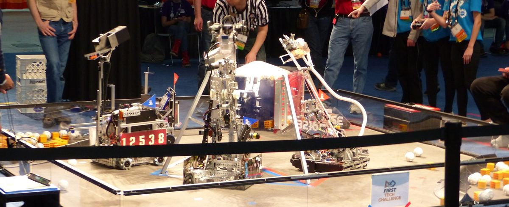
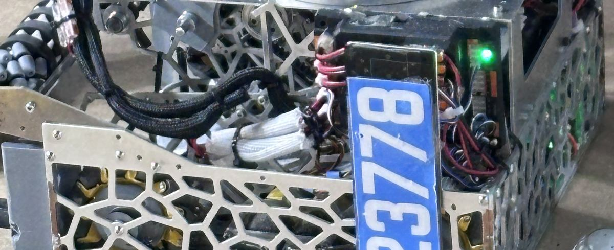
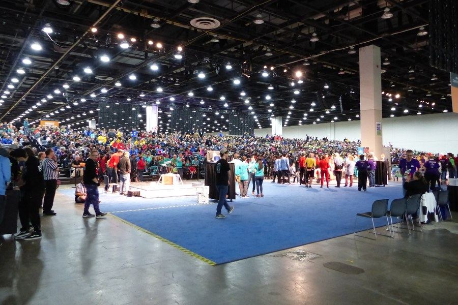
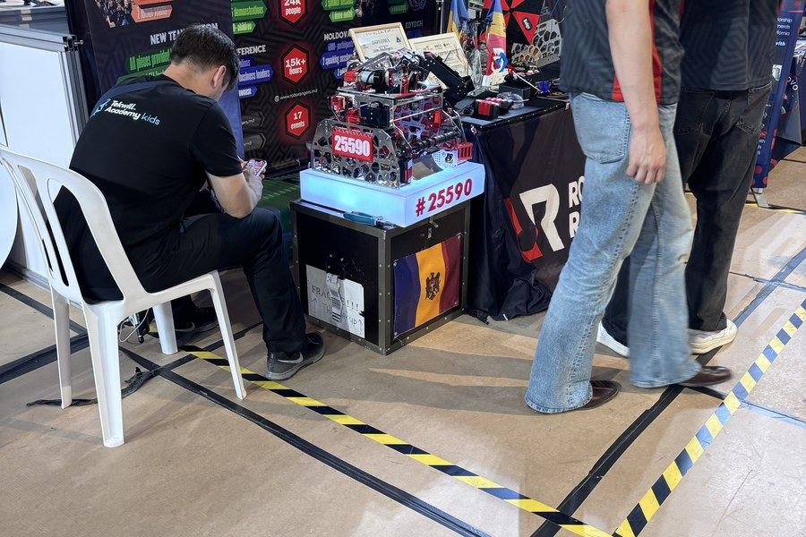
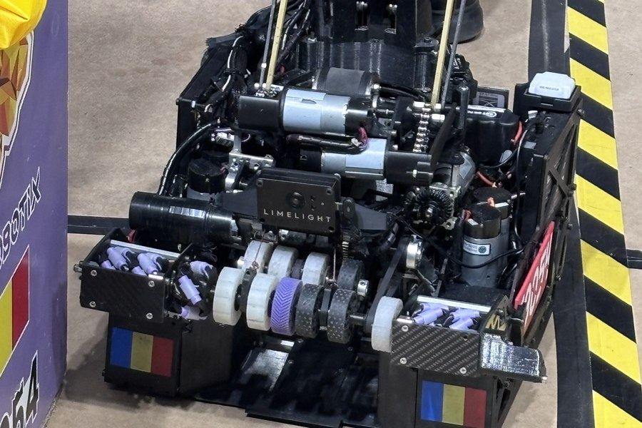

Istituto W. Kandinsky
Si costruisce un robot vero.
Un match in corso
Il robot
L'arena
Ai box
Motori e sensori

Si costruisce un robot vero.
E si va in gara.
Questo è FIRST® Tech Challenge: una squadra, una stagione, un robot costruito da zero. Al Kandinsky ci sono due squadre, e c'è posto.
Non serve saper già nienteSi comincia da zero, tutti.
C'è posto per teChi disegna, filma, scrive, organizza.
Si impara facendoCon i mentor, in squadra.
Com'è davvero





Il gioco di quest'anno: BIOBUZZ™
Due alleanze, quattro robot in campo, due minuti e mezzo. Si raccolgono palline e si ribalta l'alveare.
Si entra da dove sei già bravo
- 🔧Costruisci e programmiDisegni il robot in 3D, lo monti, scrivi il codice e lo guidi in gara.
- 🎨Dai un volto alla squadraIl logo, i colori, il diario di progetto che i giudici premiano.
- 🎬Racconti la stagioneRiprese, montaggio, social, il video per i giudici.
- 🤝Porti la robotica fuoriLaboratori per bambini e anziani. In gara vale punti e premi.
Si comincia da qui
Lunedì pomeriggio,
allo Spazio Baroni.
Dopo la scuola. Ci si ferma a pranzo insieme, se vuoi, e si comincia da lì.
Lascia i tuoi contatti →
Due minuti, e ti diciamo
quando e dove si comincia.